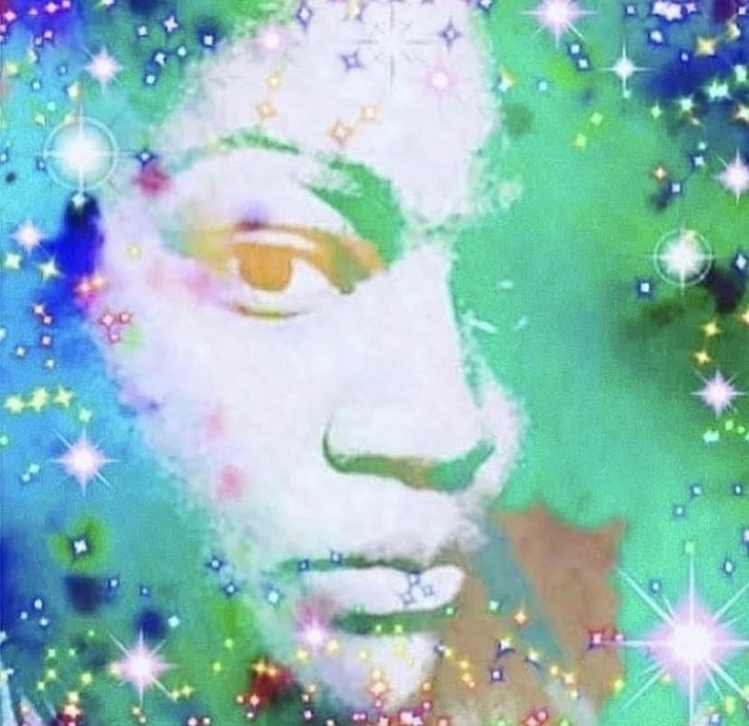
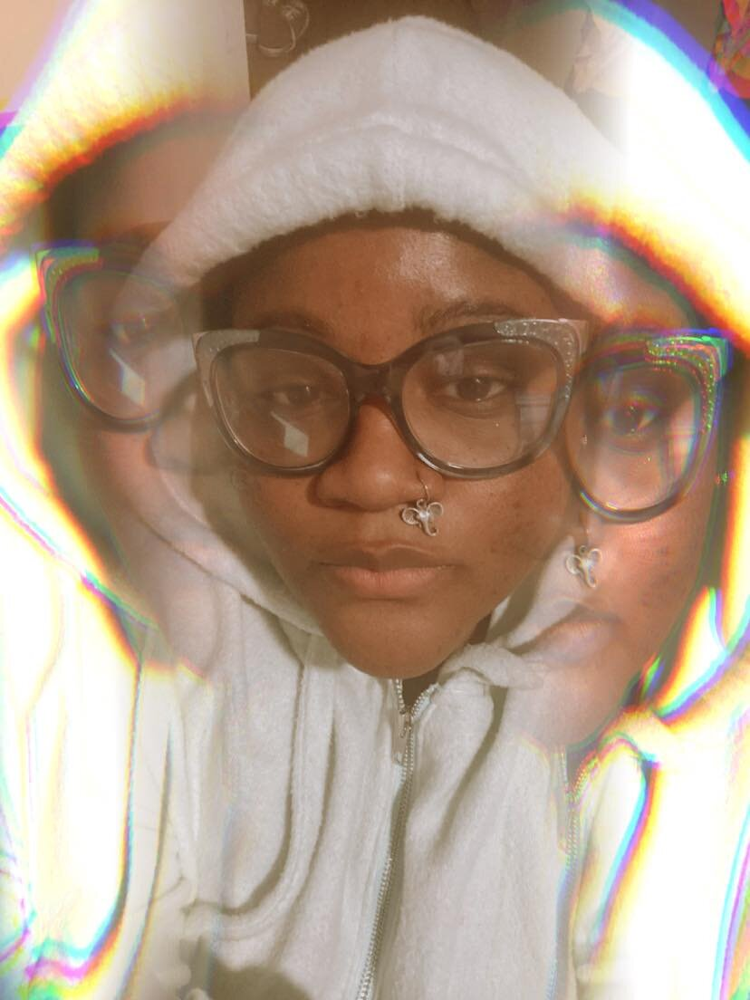
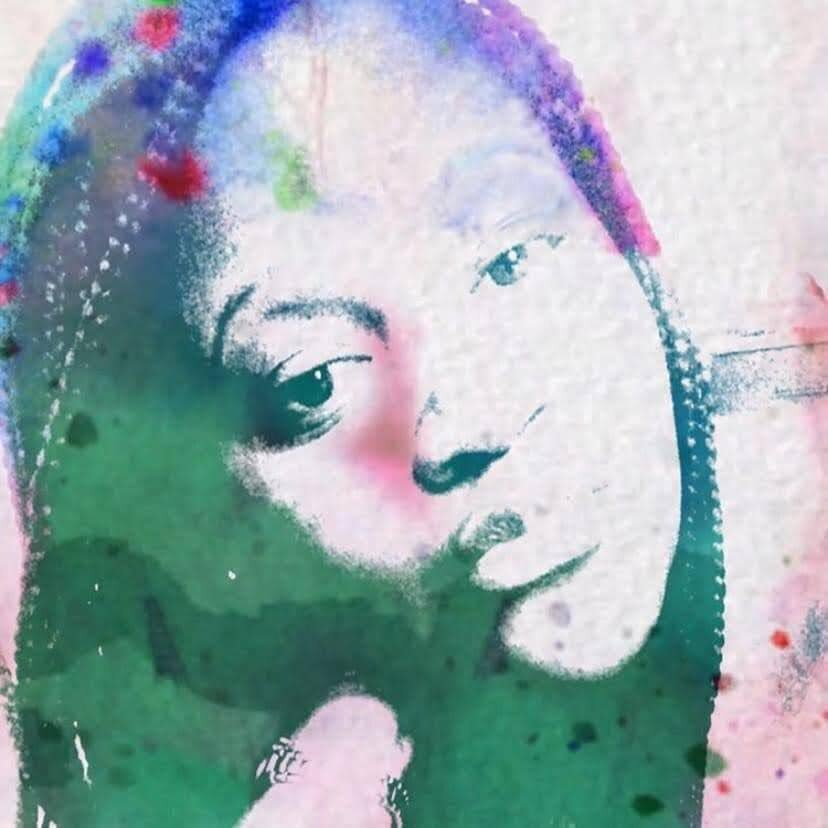

ABOUT THE CREATOR
Extra Extra Read All About It!



[Mars]ia [Roc]helin is an idividual who has married; her affinity for being Creative (Fashion Designer), her formal eduction in Business / her work experience in Finance, and her latest career venture in Tech. The self proclaimed Vybes Chaser (casually) / Fashion(Tech)prenuer (professionally) felt the Pursuit Color API was a way to translate her affinaty and/or her desisivenes towards certain colors personally and professionally when selecting colors for her collections and/or selecting colors for marketing material for her brand VANGUARDS REIGN by MR™.